Video
Example File
Guide
Tables
A simple, well-designed table can make it much easier to understand complex information. In this video I’ll demonstrate how to add document structure and visual formatting to a table to optimize its accessibility.
Objectives
- State the process for identifying column and row headers in Word and PowerPoint tables.
Screen Reading Software Users and Tables
Tables present content in a grid that can be scanned vertically (by column) and horizontally (by row). Tables usually include “headers” that label information in a specific row or column. Screen reading software users can interact with tables by moving horizontally and vertically through the table cells. When headers have been added to the document’s structure correctly, the software will present the appropriate headers as users read the table.
Headers Correctly Identified
For example, this table of course information has the correct structure.
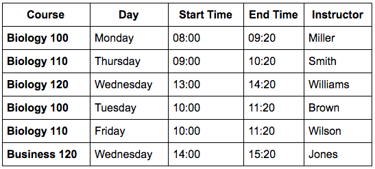
When a screen reading software user navigates across the first row of data, the NVDA screen reader would read:
"Row 2: Biology 100; Day, Column 2: Monday; Start Time, Column 3: eight zero zero; End Time, Column
4: nine twenty; Instructor, Column 5: Miller."
[narrator resumes]
The row and column header information will only be associated in this manner if the headers for this table are identified correctly.
Headers Not Identified
When table headers are not specified for this table,
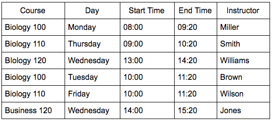
the headers are harder for visual users to identify, and the header content will not be read to screen reader users when they are navigating through the table's cells. For both types of users, the table content will be much harder to process.
Creating a Table
Word
I'll start by opening a new blank document in Word for Windows.

To create a new table in Word on Windows (or Mac):
-
Place the cursor in the document where the table will be located.
-
Open the INSERT tab on the Ribbon and go to the Table tool.
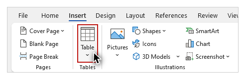
-
Click the Table tool and select Insert Table from the dropdown menu.
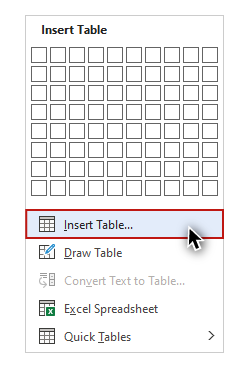
-
Using the Insert Table dialog, specify the number of columns and rows.
-
Click "OK."
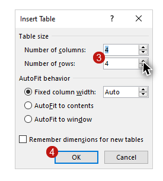
There is an alternative method for inserting a table using a mouse. Navigate to the INSERT tab, select the Table tool, hover over the grid in the dropdown menu to specify the number of columns and rows, and click to insert the table.
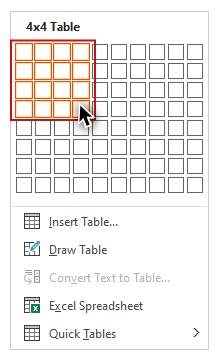
PowerPoint
Next, I'll open a blank presentation in PowerPoint on Windows.
To create a table in PowerPoint on Windows (or ) Mac:
-
Click the HOME tab on the Ribbon.
-
Select a slide Layout with a content placeholder.
-
Select the Table icon on the content placeholder.
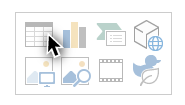
-
Using the Insert Table dialog, specify the number of columns and rows.
-
Click "OK."
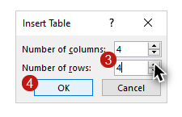
In the Mac version of PowerPoint, after you have used the Insert Table dialog to specify the number of columns and rows, click Insert.
Identifying Table Headers
The next step after creating a table is to use the built-in styles to identify the table's headers in the first row and/or the first column. I'll open the Word example file on Windows to review the tools that are provided for tables in Word and PowerPoint. To display the tools for tables, I'll click on the example table. Two new tabs––TABLE DESIGN and LAYOUT––appear on the Ribbon.
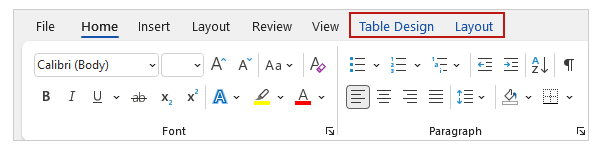
Table Design
Document structure
I'll click the TABLE DESIGN tab to demonstrate how to identify column and row headers. 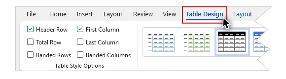
The first section contains several checkboxes. Two of these checkboxes are related to table headers: "Header Row" for identifying column headers, and "First Column" for identifying row headers. Both of these boxes are checked by default, as most tables have both types of headers.
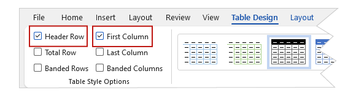
In this example, the text in the cells of the first row of the table (course, day, etc.) serve as column headers. The text in the first cell in each row functions as a row header. I will leave both Header Row and First Column checked to maintain the association between this header information and the data in the table.

There is no way to add more than one row or column of headers to a table in Word or PowerPoint, so it is important to keep its structure simple.
Visual formatting
Finally, I will choose a built-in design with a style that clearly identifies the headers visually. It is important to choose a style that meets WCAG contrast requirements, as covered in the "Contrast" section video in Module 1.
On the Design ribbon I’ll click the “More” tool to open the Table Styles gallery. Please note that most of the built-in styles do not provide sufficient contrast. I’ll apply this style with a dark-blue fill on the first row, which is named “Grid Table 4 - Accent 1.” Because I have my column and row headers identified, the header text is given a bold formatting to distinguish it visually from the data text.
Tables Are Not Recommended for Layout
At times you may see a table used to create a visual layout in a document. For example, text presented as "columns,"
or images positioned next to blocks of text.
We do not recommend this practice. These “layout tables” may cause problems for screen reading software users. For example, row and column numbers may be read for every cell, and content will be presented based on its order in the table, not how it’s organized visually.
Headings for tables
A heading preceding a table is a good method for providing users with a description of the table's content. In the example file, I will add a Heading 2 of “Spring Semester” before the table.
Now that you know how to create tables with the correct visual and structural information, you can use them in your documents and presentations with confidence.